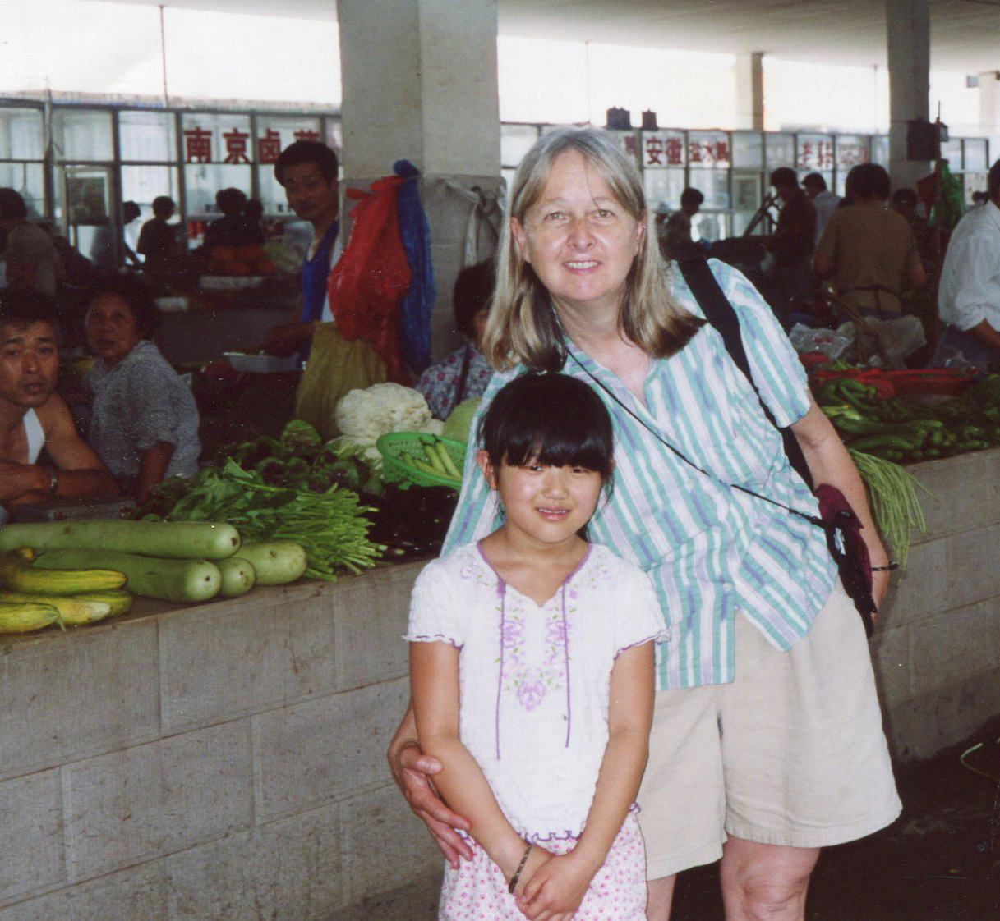
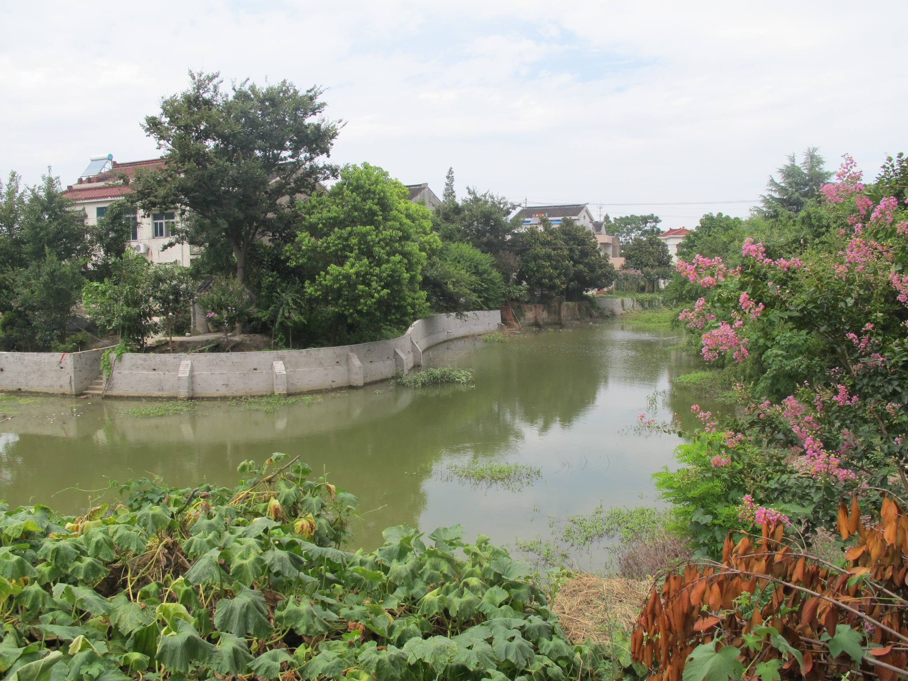
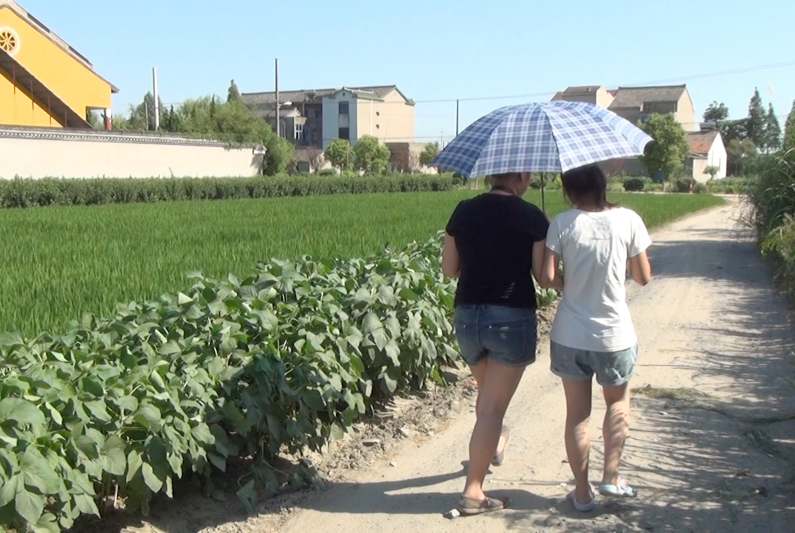

Can a teenager feel at home in a place she has no memory of living – a place where she recognizes no one, yet in the faces around her finds an unaccustomed familiarity? Maya Xia Ludtke, abandoned as a newborn in China’s rural Xiaxi Town, then adopted as a baby to grow up an American, has come “home” to find out. Though her eyes, skin and height match those of the teens she meets, subtle differences stand out in Maya’s body language, posture and stride – and in the way she weaves her silky hair into a braid she’s draped over her shoulder.
On a walk with Chen Chen, a local girl her age, neighborhood women looking out their window see Maya approaching and come out to meet this stranger. From America, Maya tells them, hesitantly using Mandarin she learned in school. Chen explains that Maya was born in their town but raised in America. Puzzled at these incongruent pieces of an unlikely life, the women declare Maya a foreigner – the first one they’ve met. Inviting her inside, the women compare Maya to girls in Xiaxi and then ask about her Chinese mother, a woman Maya knows nothing about and has not come here to find.
The Same as Me? A wooden chair, a comb, and her newfound friend Mengping transform Maya from a foreigner into a Xiaxi girl.
Before long, Yuan Mengping, a girl who lives next door, appears. Mengping’s grandmother had rushed home to get her after learning Maya is American. Mengping studies English in college. The women invite Maya to sit in a small wooden chair, and Mengping asks if it’s okay to loosen her braid. When Maya nods okay, Mengping gently sweeps a comb through her hair and gathers it in a ponytail that she tugs tight and high on Maya’s head. “You’ll be more comfortable this way,” the women assure her, and look like a Xiaxi girl.
What little Maya knows about her abandonment in Xiaxi she learned from pages in stapled documents handed to me when I adopted her as a nine-month-old baby in 1997. An official round red stamp certifies this as China’s account of her earliest days. In the English translation, we discovered the name of the town where she was abandoned, the day when someone called the police to tell them a baby had been found, and the age they estimated her to be. This information set the date when Maya had celebrated 16 birthdays with American family and friends.
Before she was 10, Maya was already becoming acquainted with Chinese culture and language with a group of adoptees in Sunday afternoon classes that the parents had arranged. In learning pinyin, the phonetic transcription of Mandarin Chinese, she found out how to give characters their proper tonal sound. Soon, Maya could pronounce her middle name, Xia, with the swish of a thin “S,” as in “Sha.”
If her birth family had not abandoned her, Maya knows she might have been the daughter of a farming family in rural China. She was drawn to return to Xiaxi to explore the girlhood she didn’t have. Maya’s friend Jennie, who was abandoned in a rural town near Maya’s during that same September in 1996, is traveling with her. The two of them spent nine months together in the orphanage in Changzhou before being adopted by moms traveling in the same adoption group. The girls grew up as friends and are companions on this journey to get to know girls who might have been their neighbors and playmates.
Home
“Do you feel an emotional attachment to Xiaxi?” Maya is asked, as she rides to Xiaxi for her first visit as a teenager.
“I actually didn’t know the name of the town until recently, so not in that way,” Maya says. “But it’s the place I came from, so I guess so.”
“When people ask where you come from do you say Xiaxi?”
“I haven’t,” Maya replies, “but I don’t think anyone has asked me since I found out what it was called.”

When Maya was seven years old, we took an uncomfortable walk through Xiaxi’s market.
Maya is pensive as she gazes out the car window watching Changzhou pass by. “Usually I just say Cambridge because it’s where I live,” Maya says. “I hadn’t thought of saying Xiaxi.”
Maya was seven years old when I brought her back to China for the first time. We spent most of our three weeks there doing things tourists do. But toward the end of our trip, we traveled by train to Changzhou. I wanted Maya to visit her orphanage. After what I felt was a good visit there, I had the idea of taking a trip to Xiaxi Town. That morning our driver parked the car on Xiaxi’s main street, and Maya and I got out to walk through its bustling outdoor market. The merchants and customers stared at us. We were an odd pair that left a disconcerting impression. There I was, a woman with blonde hair and white skin, a rare sight for them other than on TV, and I was holding hands with a Chinese girl whose expression said, “I’m scared.” Likely, many wondered if I had kidnapped her.
A few people approached Maya and spoke in a language she didn’t understand. Perhaps they were asking if she was okay. She froze, unable to say “hello” as she’d done routinely in China. Maya gripped my hand tightly, and as she did I knew we had to leave. After completing the oval path past stalls of vegetables, meat and fish, we went directly to the car. Take us to our hotel in Changzhou, I asked our translator to tell the driver. That afternoon, Maya and I stayed in our room. She didn’t want to go out. In thinking over what had happened in Xiaxi, I knew that what I wanted most for Maya was for her to return to Xiaxi on her own one day — and feel less of an outsider when she did.
Now 16 years old, Maya is in Xiaxi spending time with girls her age. I’m staying behind in Changzhou. This is Maya’s journey to make, not ours.
Getting to Changzhou had taken us five hours on a bus from Boston to New York City, a van to JFK airport, a flight to Tokyo and another to Shanghai, and a bullet train whizzing us to Changzhou, one stop short of Nanjing, the capital of coastal Jiangsu province. On their first morning in Changzhou, a 25-kilometer car ride delivers Maya and Jennie to Xiaxi, the town Maya left twice – first as a baby born to a Chinese mother and then as a girl clutching her American mother’s hand.
On this unbearably hot August morning, their car eases into the slow flow of traffic on one of Changzhou’s multilane boulevards. Designated bus corridors and rows of planted trees divide its wide streets. Businesses on either side shout out familiar names – Hermes, Burberry, Starbucks, McDonalds – as the girls sit in clogged traffic. Changzhou is a prefecture-level city that nearly five million people call home. Its roads were not nearly so wide or busy when the girls lived at the city’s Social Welfare Institute along the southern bank of the Yangtze River. The orphanage has changed its location twice since then. As the car takes them outside the central city, urban sprawl expands into what was farmland when they were born. Concrete shells of high-rise apartment buildings wrapped in green netting hug this highway connecting city residents to diminishing rural enclaves.
The Journey Back Crossing 12 time zones is easy; finding the way “home” in China is the tougher part of the adopted girls’ journey as they begin to search for their missing girlhoods.
Once off the highway, the car turns onto narrow tree-lined roads. As they enter Xiaxi, two-story concrete homes dot a landscape sculpted by fields lush with trees and flowers. Those familiar with China’s flower industry have heard of Xiaxi, a town of about 40,000 that ranks among China’s leading sellers of flower seedlings.
When their car stops, May Hu, Xiaxi’s middle school English teacher, greets Maya and Jennie and escorts them into her mother-in-law’s living room. May stays there when school is in session. On weekends and vacations, she lives at her family’s apartment in Changzhou, where her 17-year-old daughter, Xue Piao, also lives while she finishes high school. May met and married her husband in Xiaxi, which is where Piao attended primary school. Piao’s father works as a chemist in a faraway city and is rarely in Changzhou or Xiaxi. Mostly three generations of women have spent time together in recent years – May, her daughter, and her mother and mother-in-law.
Maya and Jennie sit close on the couch in the corner of the living room. Their proximity reminds me of their time as babies in orphanage cribs that touched end-to-end. Neither girl needs to explain the emotions she is experiencing. The girls have shared many stages of their life journey – from being abandoned as newborns to growing up in Caucasian families near Boston. Now each has come “home” in search of those parts of herself that she might find in a tiny town in China. In another part of the living room, Jane Liu, who is translating for the girls, is talking with Yan Yujiao on her cell phone, trying to figure out a place for Maya and her to meet. Yujiao is one of the girls who expressed interest in getting to know Maya when she came to her town. Maya whispers in a voice so soft that Jennie has to lean in to hear: “The towns we would have grown up in, the people we might have met...”
Perhaps Maya meant only to exhale but instead let her feelings escape, releasing anxiety about being introduced to Yujiao. Maya’s journey of discovery, once contemplated from the safe distance of 12 time zones away, is about to begin. Meeting Yujiao will signal the start of nearly three weeks when Maya and Jennie have the chance to fit new pieces into the puzzle of their dual identity as Chinese daughters in Caucasian families.
Soon, it will be Jennie’s turn to travel 25 kilometers in a different direction from Changzhou to Xixiashu, where she was abandoned when she was one day old. Before she goes, Jennie wants to learn how to pronounce Xixiashu. Chinese isn’t taught in Jennie’s high school; she studies French. Maya coaches Jennie on how to swish the “S” in her town’s name: “She-Sha-Shu.” Next, she teaches her how to say “I am American” in Mandarin.
 I Am American
I Am American
A day earlier at an ice cream shop in an underground mall in Changzhou, Maya hit a speed bump when she took her own Mandarin rendition of “I am American” for a test run. Maya managed to get out just a few words before the young woman taking her order was laughing – at her. Was Maya playing a joke speaking the way she was? Maya looked like any other Chinese girl so why wasn’t she speaking as the other customers do? Maya tried to explain in Mandarin that she was born in China but has an American mom and lives in America. She communicated this well enough that the cashier shot back a rapid-fire question that she didn’t understand. The cashier giggled and shook her head in wonderment. The girls left with their ice cream.
Explaining Herself Chinese-born, American raised, the girls provoke confusion and laughter. “If they look like us, why can’t they speak like we do?
Later at the hotel, Maya and Jennie told us about their shopping adventures. “We’d say we are from America, and they’d be giving us looks like ‘what are you trying to do, make fun of us or something?’” Maya said. “I don’t think they understood we are Chinese, but we live in America,” Jennie added. “Or that our parents could be American,” said Maya. “It’s hard to explain and a lot harder without our parents because they give away that we are different in that sense.”
The girls also mentioned other differences they noticed as they meandered through the mall’s twisting, neon-lit pathways. Store after store displayed nearly identical dresses, ones that Maya and Jennie described as “girlie.” All around them, Changzhou girls’ high tipsy shoes created the illusion of very long legs emerging from extremely short dresses. Maya and Jennie’s blue-jean shorts and T-shirts, along with their lack of make-up, cast them as outsiders.
“I feel out of place in China. The girls are very feminine,” Jennie said. “Different styles,” Maya echoed. “Always some kind of frills.” For them, comfort prevails over the city girls’ fashion.
Girls
In Xiaxi, Maya feels fashionably at home. Frilly dresses and high-heeled shoes aren’t in her new friends’ summer wardrobes either. With the temperature exceeding 100 degrees each day and the humidity drenching them in sweat, these rural girls wear pretty much the same kind of kick-back outfits that Maya and Jennie do, except their shirts’ glittery designs sparkle in the sunlight. Each girl wears sensible sandals or flip-flops for walking along the town’s rough roads and on dirt paths leading to the farmers’ land.

The flowers and trees in Xiaxi make Maya feel at home. When it is time to return to America, she digs a cupful of Xiaxi soil to bring home.
Most families live in thick-walled houses close to the villages’ narrow roads. Trucks hauling the fields’ harvest often halt conversations as their piercing roar reverberates off concrete walls. Grandparents here grew up in earthen homes – cooler in summer, warmer in winter than those that have replaced them. Back then, rice and wheat were more popular crops and farmers transported the harvest on their backs. Earthen houses fell out of favor a few decades ago, about the same time that tree and flower farming were replacing food crops. Xiaxi’s harvest of trees and flowers gets planted along thousands of miles of newly constructed highways in China and around quickly built high-rise buildings in need of instant greenery.
Family roots were planted here generations ago. Families visit ancestral burial sites at Lunar New Year, and children whose grandparents grew up together are friends today. In the two decades since Maya and Jennie were born, many young residents of towns like Xiaxi and Xixiashu have left to work in cities or go away to college. Rumors circulate that some of Xiaxi’s 15 villages might disappear, including Chen and Mengping’s family homes in Xiaxi’s Yuanjia village that are said to be slated for bulldozing as part of Beijing’s master plan to relocate 250 million rural families to urban areas in the next dozen years. If so, the families would likely be moved into apartment buildings closer to the multilane highway to Changzhou.
Meet Mengping and the other girls who guided this journey.
This saddens Mengping, a college student in Changzhou. However, with stoic realism she knows that such a move is inevitable if those in power want it to happen. Her uncle is the village’s leader, so her family could not protest – nor is it likely that others in the village will. “It will not do anything positive,” Mengping says. Besides, she observes, her family must be willing to sacrifice for the nation to develop. If bulldozers flatten her family’s home, what she’ll miss most is their refurbished kitchen, recently installed to replace their straw-fed oven.
Maya met Mengping on her first walk in Xiaxi with her new friend Chen. It was Mengping who combed her hair to transform her braid into a ponytail. Mengping is 20 and Chen is 16. Giggly and shy, Chen has not been as ambitious in her educational pursuits as Mengping, nor does she seem interested in exploring anything outside of the regular flow of daily life in Xiaxi. Like all students in China, Chen was taught English. But speaking it is tougher for her than for Mengping, who is majoring in Japanese in college but also works to improve her English.
Telling Her Story Chen plays music on her cell phone constantly, yet when she asks Maya to dance, only the girls’ giggles accompany the new friend’s twirl.
When she was seven, Chen’s parents divorced, and her paternal grandparents, who are 67 and 69 years old, took over raising her. Since then, Chen has neither seen nor heard from her mother. “I barely remember how she looked,” Chen says. She says she is “the real child” of her grandparents. Years ago, her father moved with his new wife to another province, where he raises pigs. He seldom comes back to Xiaxi. The family’s meager income comes from Chen’s grandfather’s gardening work and rent that a young couple pays for a room while the husband hauls trees. Chen’s nine-year-old cousin lives nearby and likes to follow Chen around. That girl’s father, Chen’s uncle, died in a car crash.
Chen most enjoys playing music loudly on her cell phone. She does this in her sparsely furnished bedroom and on walks through the village, singing along to improve her voice. She’d hoped to study Western-style singing in college, but that dream vanished when her senior high school entrance exam scores were too low to attend a college-track high school. Soon after Maya left Xiaxi, Chen headed to a nearby training school for her first job, waiting tables and washing dishes at a restaurant. Unlike Chen, Yan Yujiao is an exceptional student who performed well on her high-school entrance exam. While Maya is in Xiaxi, Yujiao leaves to study at the region’s top high school. She’ll share a dormitory room with several other students and plans to return to Zhouzhuang village in Xiaxi every few weeks.
Yujiao’s parents, like Chen’s, did not raise her. Her father died when she was a baby and then her mother left Xiaxi and never returned. Yujiao’s uncle took her in. She now lives with a male cousin, his wife, and their young son and daughter. This cousin proudly describes his son as “a very quick learner.” We don’t hear him voicing similar sentiments about Yujiao; he does mention that she studies so hard that chores such as washing clothes, cleaning and cooking go undone.
The Meaning of Her Name Yujiao, like Maya, does not have her birth parents in her life; her cousin’s family is raising her. She is studious and hopes to become a TV news anchor.
Sitting on a bamboo mat on her hard wooden bed, Yujiao and Maya compare their upbringings. Each was abandoned and grew up in the absence of birth parents, yet their pathways have diverged sharply. Maya shows Yujiao pictures of her with family and friends in America. Yujiao doesn’t have any photographs from her childhood. Maya tells Yujiao she’s been raised only by her mom. The girls talk about how they feel when people ask about their reconstructed families. Maya says she’s okay with questions people ask about her mom not looking like her and being raised without a dad. Yujiao tells Maya, “I am used to it, too. I’ve lived here a long time.” In her small village people stopped asking a long time ago.
The girls discover common ground in books they’ve read. Yujiao read How the Steel Was Tempered in school and absorbed its lessons on how to be resilient growing up in tough circumstances. “The spirit of the book is strength,” she says. Maya tells her about The Kite Runner, a favorite of hers. “It’s about dealing with your past and finding your future and being okay with who you are,” Maya says. “I liked that book a lot.”
Just as this visit is about to end another connection emerges. The girls realize that neither is particularly strong in math nor much attracted to the subject. Soon after Maya leaves her house, Yujiao texts Jane, the translator: “Those whose math is not very good are angels.” Jane later explains the message’s significance to Maya: “In China, it is always encouraged that you should be good at math – otherwise you will not have a bright future. Suddenly, Yujiao meets a beautiful girl from America, with the same roots in her town, and her math is not very good, either. So she is happy.”

One of the first things Shan wants to show Jennie are the fields where her grandparents farm. An umbrella shields them from the early afternoon sun.
The next day Jennie travels to her “hometown” of Xixiashu that is northwest of Changzhou and roughly the same distance as Xiaxi from the city center. With 40,000 residents living in a dozen villages, Xixiashu matches Xiaxi in size and arrangement. As a place where small machine tools are produced, Xixiashu is more industrial. Its streets are wider, its houses bigger, and to an outsider’s eye it appears richer than Xiaxi, though residents of neither town approach the income or lifestyle of most of Changzhou’s residents.
On her first trip to Xixiashu, Jennie’s mom accompanies her. After that, Jennie will be on her own with her Chinese friends. In Xixiashu, Jennie meets Jin Shan, a playful 18-year-old with a penchant for selfies and photos of her new friend doing all sorts of silly things. Her parents drive the girls to Shan’s paternal grandparents’ home, which is baking in the intense midday heat. Shan is eager for Jennie to meet the people who raised her from when she was seven months old until she was in sixth grade. Those were the years when her parents went to northern cities to earn money as migrant tailors. When Shan missed her parents, she visited them in the summer. She had no friends there, and with her parents working long hours, Shan felt very lonely. When her parents finally came back to live in Xixiashu, they had saved enough money to set up a store where they sell steel products for local construction. By then, Shan was accustomed to living with her grandparents and found it hard to adjust to being with her parents.
Making the Imagined Real On the first visit to her Chinese hometowns, Jennie’s mother goes with her. After that, she is on her own to spend time with the girls she meets.
The next morning, Jennie and Shan hang out in the air-conditioned study in her parents’ apartment, getting to know each other better. Then Shan’s parents whisk the girls off in the family car to a local restaurant for a banquet in honor of their American guest. The girls sit next to each other and talk in English. Shan speaks English well, which is fortunate since Jennie only understands basic Mandarin words like “hello” and “thank you.” Shan entertains her American friend by scrolling through selfies on her cell phone, along with photos she took of Jennie the day before. As platters of food circle by, Jennie relies on Shan for help in figuring out what’s being served and how to eat it. For starters, Shan teaches Jennie how to snap the head off the shrimp and peel back its shell. Soon Jennie is staring into the wide-jawed, sharp-toothed smile of a steamed fish that is staring right back at her.
A Feast of Surprises Shan’s family hosts a banquet to honor their daughter’s new friend Jennie, who is grateful for her Shan’s help, especially with seafood specialties. As the food spins by - some of it looking right at her - it seems as foreign to Jennie as the language.
“That fish is scary,” Jennie declares. Jane tells her Shan’s parents ordered it especially for her. “Not many bones,” Jane says. But there are plenty of teeth. Jennie maneuvers her chopsticks into the meaty part of the fish and takes a polite nibble. So begins a friendship that will strengthen over the coming weeks and continue via text and shared photos when Jennie returns to America. It turns out Jennie’s appearance in Shan’s life happened at a perfect time. Shan feels ashamed that she let her family down with her low score on the gaokao, the national college entrance exam – leaving her 10 points shy of being admitted to a four-year college. So as Jennie attends her last year of high school, Shan will begin three years of studying construction for at Nantong Vocational College in Jiangsu province. For now, teaching Jennie about girls’ lives in Xixiashu boosts Shan confidence; she embraces this unaccustomed role wholeheartedly.
At the end of her second day with Shan, Jennie reflects on being in Xixiashu. “It’s very different, yet kind of similar to what I expected,” she says. Her jumbled reaction speaks to the torrent of sensations she and Maya are experiencing. It feels odd to be back in places they don’t remember being. But over time, as girls like Shan present ground-level glimpses at lives that could have been theirs, the reality replaces what was only imagined.
“Where her grandparents live is more like I expected,” Jennie says, referring to the part of the town where farmers live. “The city part is more developed than I imagined. I pictured more fields and farmers.”
Jennie turns to look out the window as she rides away from Shan’s grandparents’ village. “I just felt so welcomed there.”